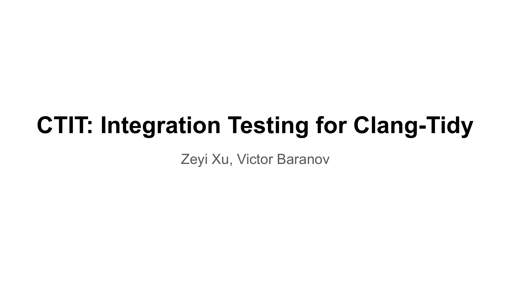

Sorry if my spoken English is a bit lacking, so the presentation is a bit difficult to follow. If anything isn’t clear, please feel free to jump in and ask.
Hi everyone, and thank you for having me. I’m Zeyi Xu, and this is joint work with Victor Baranov. Today I’d like to introduce CTIT, the Clang-Tidy Integration Tester. CTIT is a public service that takes a proposed clang-tidy change and runs it on real-world C and C++ projects while the pull request is still in review. So far it serves clang-tidy, but at the end I’d like your opinion on whether it could also help the Static Analyzer or other tools.